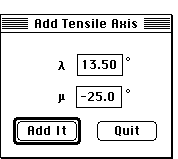

Distributed By: Virtual Labs
Add Tensile Axis Dialog Box
PATH...{Stereographic Projection Object}:Function Menu:Add Tensile
Axis...

Add Tensile Axis Dialog Box
It is possible to plot a pole with a specific angular relationship with
respect to some other pole. To do this go to the Function menu and select
the .i.Add Tensile Axis;... item. The Tensile Axis Dialog Box will be displayed..
When this dialog box is open, poles may be added with either the mouse or
by typing in the angles of interest. m is vertical and l is the horizontal
axis.
Author: J.ames T.
Stanley
 Desktop
Manual:Dialog Boxes
Desktop
Manual:Dialog Boxes
Distributed By: Virtual Labs
Last Updated:1/12/96 Sat, Apr 27, 1996